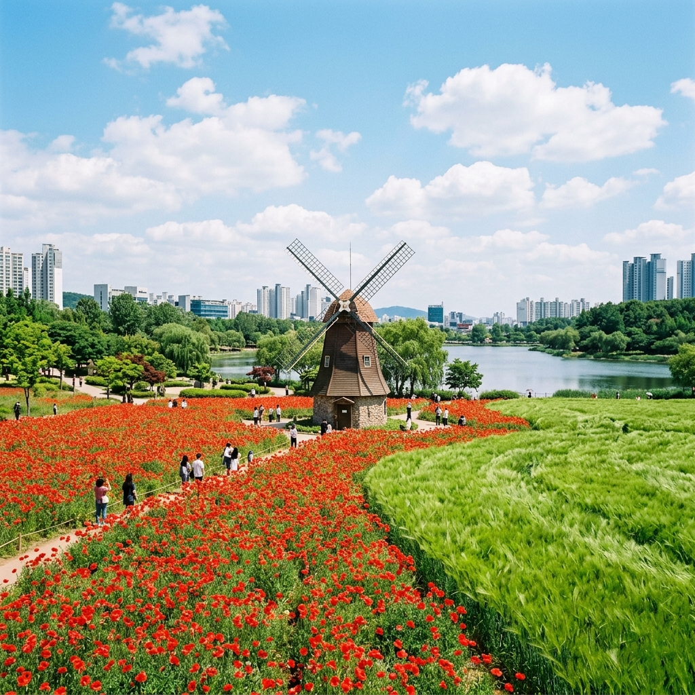
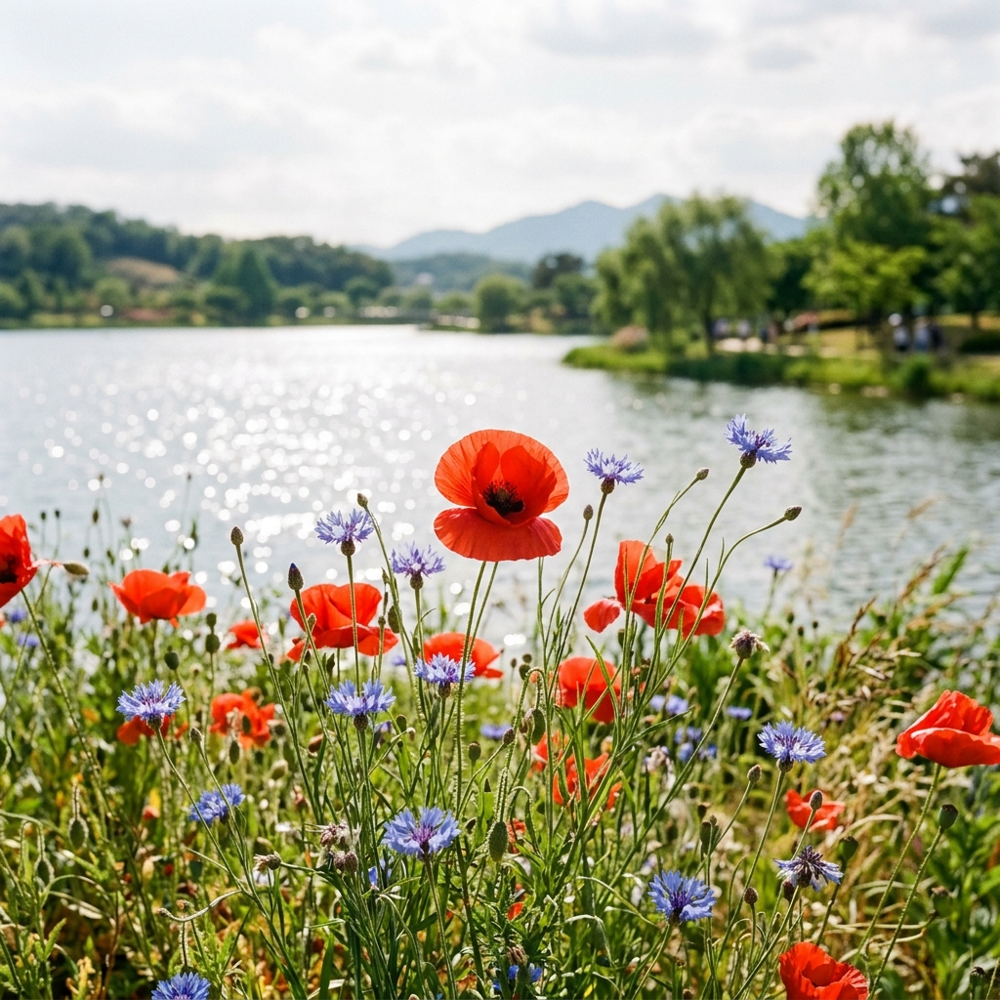
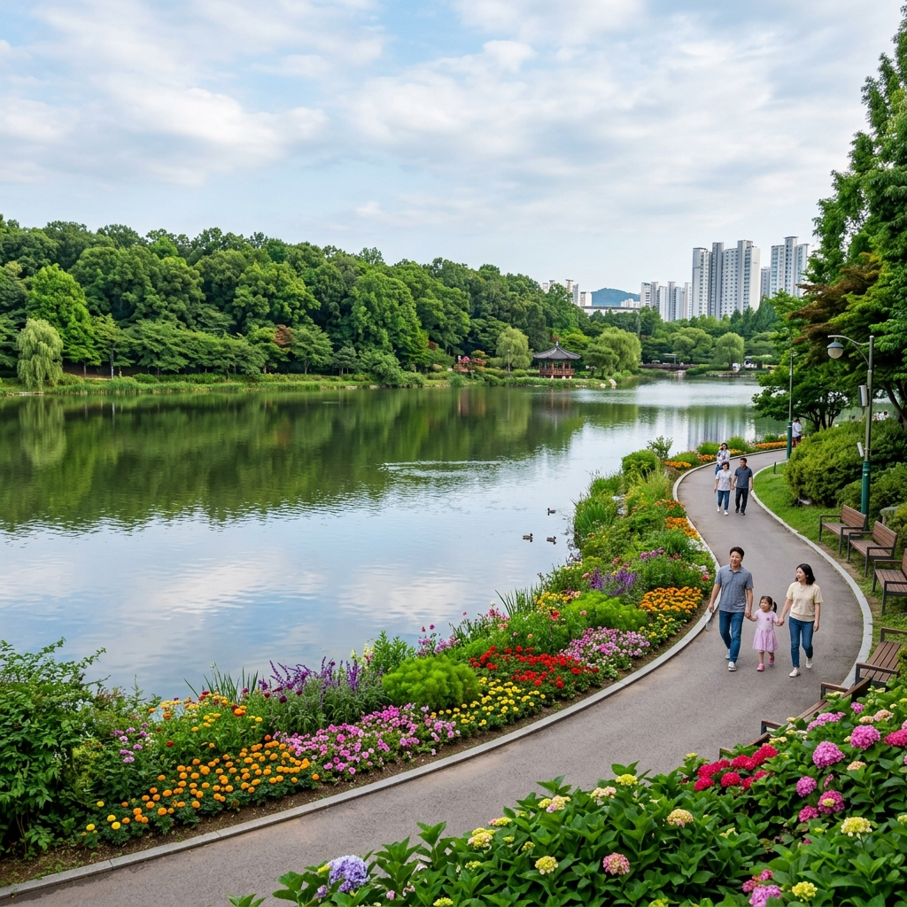

부천 상동호수공원 양귀비 개화시기 및 청보리밭 실시간 현황
도심 속 힐링 명소로 사랑받는 부천 상동호수공원이 5월을 맞아 붉은 양귀비와 푸른 청보리의 조화로운 풍경으로 옷을 갈아입고 있습니다. 멀리 떠나지 않아도 수도권에서 만날 수 있는 이색적인 꽃물결은 매일 수많은 시민들의 발길을 사로잡고 있는데요. 2026년 실시간 개화 상황과 함께 한적하게 산책하기 좋은 방문 시간대, 주차 팁까지 완벽하게 정리해 드립니다.
1. 2026년 상동호수공원 양귀비 개화시기 현황
상동호수공원의 꽃양귀비는 보통 5월 초순부터 피기 시작하여 중순에 절정을 이룹니다. 2026년 올해는 따뜻한 봄 날씨 덕분에 현재 약 30~40% 정도 개화가 진행된 상태이며, 돌아오는 주말인 5월 9일 전후로 화려한 만개를 감상할 수 있을 것으로 예상됩니다.
바람에 흔들리는 붉은 양귀비 꽃잎은 보는 것만으로도 마음이 정화되는 느낌을 주는데요. 특히 공원 중앙의 드넓은 화단에 밀집되어 있어 압도적인 색감을 자랑합니다. 개화 상태는 기온 변화에 따라 유동적이므로, 방문 직전 최신 포스팅이나 공원 관리소의 공지를 확인하시는 것이 좋습니다.

붉은 양귀비 꽃밭 너머로 보이는 이국적인 풍차 전경 / AI 제작 이미지
2. 초록빛 싱그러움: 청보리밭 산책로 즐기기
양귀비와 함께 상동호수공원의 5월을 책임지는 또 다른 주인공은 바로 청보리입니다. 양귀비 화단 바로 옆으로 넓게 조성된 청보리밭은 초록색 파도가 일렁이는 듯한 장관을 연출하는데요. 도심 한복판에서 시골의 정취를 느낄 수 있어 남녀노소 모두에게 인기 있는 장소입니다.
청보리는 5월 중순까지 가장 싱그러운 빛깔을 유지하며, 이후 황금색으로 익어가는 모습 또한 매력적입니다. 보리밭 사이로 조성된 산책로를 따라 천천히 걷다 보면 일상의 피로가 씻겨 나가는 기분을 만끽할 수 있습니다. 바람이 불 때마다 들려오는 보리 부딪히는 소리에도 귀를 기울여 보세요.
3. 인생샷 보장! 공원 내 최고의 포토존 추천
상동호수공원에서 가장 사진이 잘 나오는 명당은 단연 나무 풍차 앞입니다. 네덜란드의 시골 마을을 연상케 하는 풍차를 배경으로 양귀비와 청보리를 한 프레임에 담으면 인생샷을 건질 수 있습니다. 특히 해질녘 노을이 비칠 때 촬영하면 몽환적인 분위기가 배가됩니다.
또 다른 추천 장소는 호수 데크길입니다. 잔잔한 호수 위로 비치는 도심 빌딩 숲과 화려한 꽃밭의 대비는 상동호수공원만이 가진 독특한 매력입니다. 꽃 속에 파묻힌 듯한 느낌을 원하신다면 화단 외곽의 벤치에 앉아 낮은 앵글로 촬영해 보시는 것을 추천드립니다.

붉은 양귀비와 푸른 수레국화의 환상적인 대비 / AI 제작 이미지
4. 대중교통 및 주차장 이용 실전 팁
상동호수공원은 지하철 7호선 삼산체육관역 5번 출구에서 도보로 5분 거리에 위치해 있어 대중교통 접근성이 매우 뛰어납니다. 가급적 지하철 이용을 권장해 드리며, 자차 이용 시에는 공원 내 공영 주차장을 이용할 수 있습니다.
다만, 꽃이 절정인 주말에는 주차 대기 줄이 매우 길어질 수 있습니다. 이럴 때는 인근 한국만화박물관 주차장이나 영상문화단지 주차장을 이용하신 후 조금 걸어오시는 것이 시간 절약에 도움이 됩니다. 주차 요금은 공영 주차장 수준으로 저렴하니 부담 없이 이용하세요.
5. 아이와 함께라면? 수피아 식물원 연계 투어
공원 내에는 사계절 내내 푸른 식물을 만날 수 있는 부천 호수식물원 수피아가 있습니다. 야외 꽃구경을 마친 후 실내 식물원을 방문해 보세요. 거대한 바오밥나무와 다양한 열대 식물들이 가득해 마치 정글을 탐험하는 듯한 즐거움을 줍니다.
수피아 식물원은 사전 예약제로 운영되니 방문 전 부천시 홈페이지를 통해 미리 예약하시는 것이 필수입니다. 식물원 내에 위치한 카페에서 커피 한 잔을 마시며 통창 너머로 보이는 호수 뷰를 감상하는 시간도 놓치지 마세요. 아이들을 위한 생태 교육 프로그램도 상시 운영 중입니다.
6. 도심 속 여유: 호수 주변 벤치와 피크닉 명당
상동호수공원은 걷기만 하는 곳이 아니라 앉아서 쉬기에 더 좋은 곳입니다. 호수 주변으로 넉넉하게 배치된 벤치에 앉아 물멍을 즐겨보세요. 또한, 지정된 잔디 광장에서는 돗자리를 펴고 가벼운 피크닉을 즐길 수 있어 가족 단위 방문객들에게 인기가 많습니다.
단, 텐트나 그늘막 설치는 금지되어 있으니 주의하시기 바랍니다. 공원 내 매점에서는 간단한 스낵과 음료를 판매하지만, 정성껏 준비한 도시락과 함께하는 피크닉은 여행의 즐거움을 더해줍니다. 쓰레기는 반드시 다시 가져가는 성숙한 시민 의식을 보여주세요.

푸른 나무와 호수가 어우러진 평화로운 산책로 전경 / AI 제작 이미지
7. 부천 시민이 추천하는 인근 맛집 탐방
산책 후 허기진 배를 채울 시간입니다. 상동역 인근에는 다양한 맛집들이 밀집해 있습니다. 특히 시원한 냉면이나 메밀 막국수는 5월의 따뜻한 날씨와 찰떡궁합입니다. 또한, 부천의 명물인 돼지갈비 거리도 멀지 않아 가족 외식 장소로 제격입니다.
가벼운 브런치를 원하신다면 상동 카페 거리에 위치한 예쁜 카페들을 방문해 보세요. 갓 구운 빵과 향긋한 커피가 기다리고 있습니다. 부천은 먹거리가 워낙 다양해 취향에 맞는 메뉴를 고르는 재미가 쏠쏠합니다.
8. 쾌적한 관람을 위한 준비물과 주의사항
5월의 햇살은 생각보다 강합니다. 자외선 차단제와 양산은 필수이며, 넓은 공원을 걸어야 하므로 편안한 운동화 착용을 강력 추천합니다. 또한, 꽃 알레르기가 있는 분들은 미리 개인 상비약을 준비하시는 것이 좋습니다.
사진 촬영을 위해 화단 안으로 들어가는 행위는 절대 금지입니다. 지정된 산책로에서도 충분히 아름다운 사진을 남길 수 있으니 소중한 꽃들이 다치지 않게 배려해 주세요. 반려동물 동반 시에는 반드시 목줄을 착용하고 배변 봉투를 지참해야 합니다.
9. 에디터가 전하는 상동호수공원 마지막 팁
바쁜 일상 속에서 잠시 쉼표가 필요할 때, 부천 상동호수공원은 가장 가까운 해답이 되어줍니다. 붉은 열정의 양귀비와 평온한 초록의 청보리가 전하는 위로를 받아보세요. 혼자만의 사색도 좋고, 소중한 사람과의 데이트 코스로도 더할 나위 없습니다.
이번 주말, 지하철 한 번이면 닿을 수 있는 이곳에서 5월의 낭만을 만끽해 보시는 건 어떨까요? 도심 속 정원이 주는 작지만 확실한 행복이 여러분을 기다리고 있습니다.
#부천상동호수공원
#양귀비개화시기
#청보리밭
#부천가볼만한곳
#수도권꽃구경
#5월나들이
#상동호수공원주차
#수피아식물원
#서울근교데이트
#인생샷명소